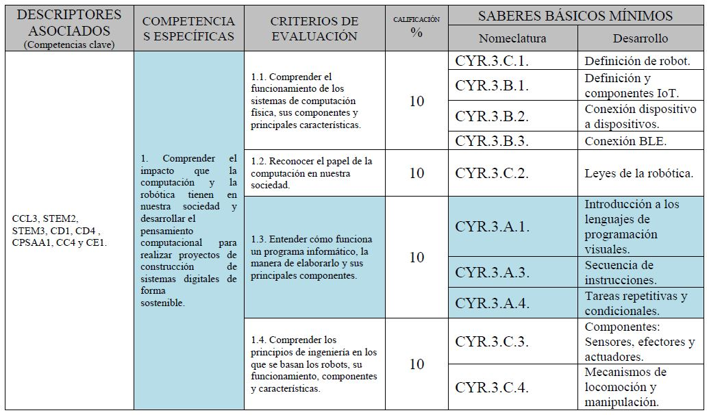

1. TÍTULO DESCRIPTIVO
Iniciación a la programación con Scratch
Iniciación a la programación con Scratch
Comprender el impacto que la computación y la robótica tienen en nuestra sociedad y desarrollar el pensamiento computacional para realizar proyectos de construcción de sistemas digitales de forma sostenible.
Estudiar programación a edades temprana no es (solamente) para chicos que quieran ser programadores. Aprender a programar hace que cualquier persona alcance su máximo potencial, independientemente de lo que vaya a hacer el resto de su vida. Todos van a ser mejores profesionales.
Hoy en día la programación, gracias a las asignaturas de computación y robótica (de 1º a 3º de la ESO) y de Tecnología (de 2º a 4º de la ESO) se ha hecho imprescindible para que los alumnos/as se desarrollen tanto académica como intelectualmente en la sociedad en la que vivimos.
Como podemos ver cubre un abanico muy amplio, pero nos vamos a centrar en la asignatura de Computación y Robótica de 1º de la ESO.
La temporalización comprenderá todo un trimestre.
Al centrarnos en la asignatura de Computación y Robótica, teniendo en cuenta que son dos horas a la semana y que estamos en primero de la ESO donde el pensamiento racional y computacional no está todavía desarrollado, se necesitará mucho tiempo para que los alumnos/as se inicien en el mundo de la programación de la mano de Scratch (que es considerado el programa más fácil e intuitivo para aprender a desarrollar dicha forma de pensar).
Las áreas implicadas en un principio son Computación y Robótica y Tecnología, pero se podría extender a cualquier materia debido a la interdisciplinaridad de los programas que se pueden crear. No es solo aprender a programar, sino que se puede hacer un programa/juego para aprender operaciones matemáticas, otro para aprender vocabulario en inglés, partes del cuerpo humano, etc…
Teniendo en cuenta que nos vamos a centrar en 1º de la ESO el idioma será el español, puesto que en esta etapa los alumnos todavía no tienen muchas nociones de inglés. Pero teniendo en cuenta que en programación e informática, la mayoría de las órdenes y la forma de construir recursos está pensada para el uso del inglés, se intentará ir introduciendo terminología en este idioma para que se vayan aconstumbrando.
Entender cómo funciona un programa informático, la manera de elaborarlo y sus principales componentes.

He decidido desarrollar este proyecto puesto que el contenido a tratar se ve a lo largo de toda la etapa de la ESO (más o menos desarrollado) en las distintas asignaturas de Computación y Robótica y Tecnología. De esta forma puedo utilizar este proyecto como referente para futuras clases.
Obra publicada con Licencia Creative Commons Reconocimiento No comercial Compartir igual 4.0